Custom Component Development and Backend Integration
Tutorial by Frank Nimphius, Oracle
March 2019, Oracle Digital Assistant version 19.1.3
Custom components are reusable units of custom code that are added to skills in Oracle Digital Assistant to be executed at runtime in the context of a user-bot conversation. From a bot design perspective, there is no difference between a custom component you build and system components provided by Oracle Digital Assistant.
Integrating remote backend systems to a chatbot conversation is the most common usecase for developers to build custom components in Oracle Digital Assistant. You develop custom components using JavaScript and Node.js.
In this tutorial you learn how to build custom components for deployment to Oracle Digital Assistant's local Node container.
Before You Begin
Following the instructions in this tutorial, you will create a custom component that integrates currency conversion functionality into a bot conversation. In particular, you learn
How to start a new custom component service project using the Oracle Bots Node.js SDK.
How to define the custom component's name, input parameters and returned actions.
How to implement logging.
How to invoke a remote REST services.
How to deploy custom component services to skills in Oracle Digital Assistant.
What Do You Need?
This tutorial is for developers that are familiar with JavaScript and Node.js development. To complete this tutorial, the following prerequites must be met
You need to have access to Oracle Digital Assistant
You need a JavaScript IDE installed. For example, this tutorial uses Microsoft Visual Studio Code in its screen shots. If you feel comfortable using a text editor, then this is fine too.
You must have Node.js and Node Package Manager (NPM) installed for global access. If you used a Node installer (Windows, MAC) both executables, node and npm should be available to you. To test if you have Node.js and NPM installed, open a terminal window and try the following commands seperately: node -v, npm -v
The Oracle Bots Node.js SDK is a Node module provided and maintained by Oracle to build and deploy custom component services for Oracle Digital Assistant. You can read up about the Oracle Bots Node.js SDK on GitHub and the Node Package Manager website.
Follow below steps to install the Oracle Node.js Bots SDK to your local machine.
Open a terminal window.
If your Internet access is through a proxy, you may need to do the following in the terminal window to be able to install the Oracle Bots Node.js SDK from the Internet:
npm config set proxy http://external_ip:80 npm config set https-proxy http://external_ip:80
To install Oracle Bots Node.js SDK for global access on your laptop, type
npm install -g @oracle/bots-node-sdk
Note: On a MAC, you use the sudo command: sudo npm install -g @oracle/bots-node-sdk
To verify the success of your installation, type bots-node-sdk -v. The command should print the Oracle Bots Node.js SDK version.
Requesting a fixer.io Currency Converter API Key
The "Fixer" website, fixer.io, offers current and historic exchange rates for up to 170 currencies. To complete this tutorial, you need a free subscription that allows you to access current conversion rates.
Click this link to navigate to the fixer.io website
Click on the GET FREE API KEY link in the upper right corner.
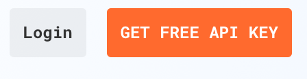
Click the GET FREE API KEY button
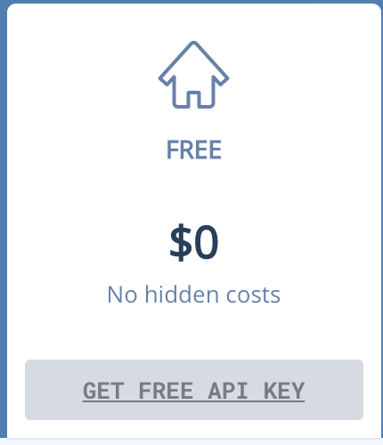
Complete the registration form.
Copy and save the free API key displayed in the confirmation page.
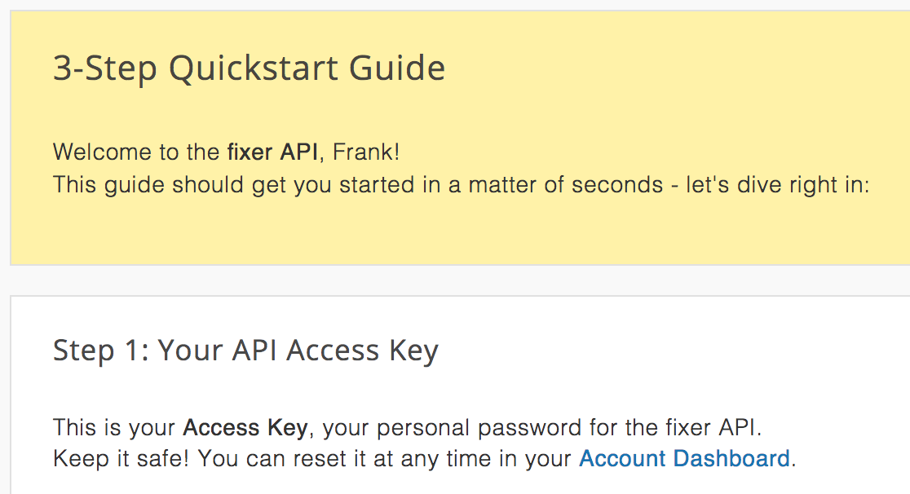
Note: The free API key does come with restrictions. For example, the conversion rates are updated less frequent. In addition, the base currency is Euro (EUR). The latter restriction can be handled in the custom component code so that users can use any currency as the base currency. Also, requests can only be made using HTTP (no HTTPS)
Creating the Custom Component Service
To create a new custom component service project, you use the Oracle Bots Node.js SDK command line interface you installed implicitly when installing the Oracle Node.js SDK. The Oracle Bots Node.js SDK provides all the infrastructure and tools you need to test, debug and deploy custom component services.
Getting started
On the file system, create a new folder that you name converterccs. Ensure the converterccs folder is located in a directory path that does contain blanks. E.g., on Windows, don't create the convertercssin the "Program Files" folder.
Open a terminal window and navigate into the converterccs folder
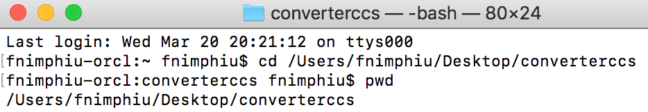
In the converterccs folder, type the following commands and press the enter-key on your keyboard after each
What you just did: Following the instructions in this section, you created a new node project (npm init -y) in which you installed the Oracle Bots Node.js SDK. You then used the Oracle Bots Node.js command line to create your first custom component: "CurrencyConverter". Your custom component service folder structure looks as shown in the image below:
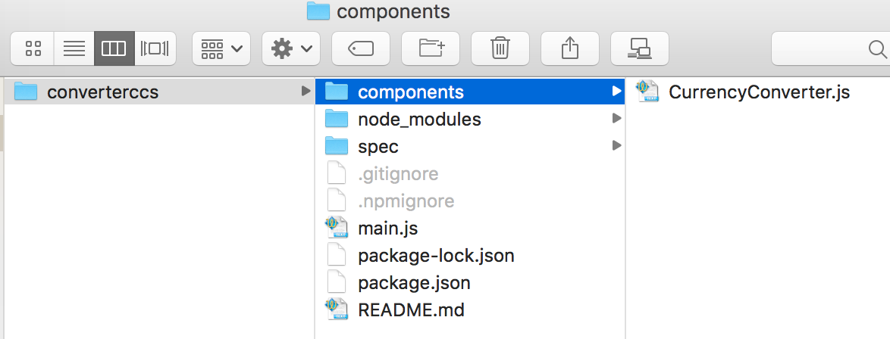
Starting your component development
The custom component service you just created is the equivalent to "hello world" often used in the world of programming. In the following, you are modifying the sample code to become the starter for the currency converter custom component.
Open your JavaScript editor of choice.
In the JavaScript editor, open the converterccs folder as a new project
Note: The above screenshot shows Microsoft Visual Studio Code. Microsoft Visual Studio Code supports opening folders on the file system as projects. If your JavaScript IDE does not support to open folders, then directly open the CurrencyConverter.js file located in the converterccs/components folder.
In the opened project folder, expand the components node and select the CurrencyConverter.js 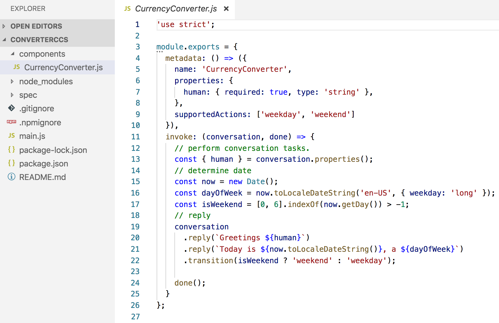
Line 5 in above screenshot shows the following property definition: name: 'CurrencyConverter'. Change this definitions to name: 'complete.training.CurrencyConverter'.
Note: Adding a prefix to the component name helps avoiding naming conflicts in Oracle Digital Assistant skills that have many component services from different developers configured.
In line 7, change the string human to variable.
Create a new line below line 7 and add the following code for the base currency:
baseCurrency: { required: true, type: 'string' },
Create another new line for the target currencies. Add the following code:
Finally, create one more new line for the amount and add the following code:
amount: { required: true, type: 'int'}
change the following code line
supportedActions: ['weekday', 'weekend']
to
supportedActions: ['success', 'failure']
With these changes, the metadata: () function should look as shown in the image below:
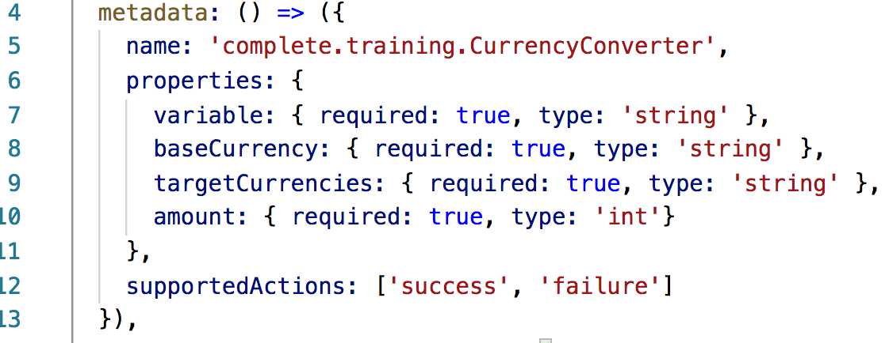
Next, change the code of the invoke: (conversation, done) function to look as shown in the image below. To save you some typing, you can obtain the code lines from here. 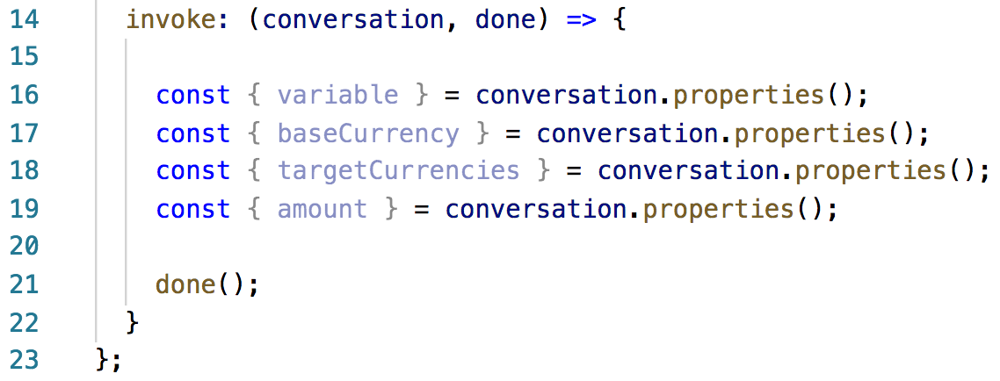
What you just did: The metadata function describes the custom component to Oracle Digital Assistant at design time. The name prefix you added to the generated component name helps avoiding the possibility of naming clashes with other custom components.
The component properties you added define the component's input parameters that the bot designer must provide values for when adding the component to a dialog flow. The variable property holds a reference to a dialog flow variable the bot designer created to hold the result object returned from the custom component.
The two supportedActions, "success" and "failure", allow the custom component to indicate to the skill whether the currency conversion succeeded or not. The bot designer uses supportedActions in action transitions to conditionally continue the user-bot interaction based on the component outcome.
The code in lines 16, 17, 18 and 19 read the values for the required component input parameters. The input parameters are flagged as required in the metadata() definition, so that missing values cause a runtime exception when testing the bot. Because of this, there is no need to check for null values in the code (which you would need to if parameters were flagged as optional)
The done() function call invokes a callback that passes the component response back to the Oracle Digital Assistant skill the custom component is configured in.
Adding your first logging statement
Edit line 20 shown in the image above and add the following code in a single line:
Note: The Oracle Digital Assistant custom component service SDK exposes a configurable logger. By default, logging is setup to use the console logger. This entry-level tutorial does not cover custom component debugging, so that logging is the option you use for tracking the custom component processing. The log statement you added prints the names and values of the component's input parameters.
Building the fixer.io request URL
Create a new line under the conversation.logger() code line.
var tmpTargetCurrencies = targetCurrencies+","+baseCurrency;
var fixerIoAPIKey = "<replace with your api key>"
var reqUrl = "http://data.fixer.io/api/latest?access_key="+fixerIoAPIKey + "&base=EUR&symbols=" + tmpTargetCurrencies;
conversation.logger().info("fixer.io request URL:"+reqUrl.replace(fixerIoAPIKey,"*********"));
The custom component's invoke function should now look as shown in the image below 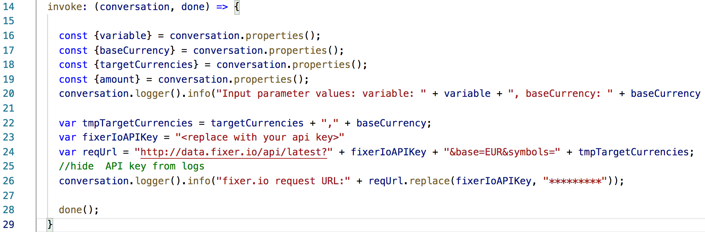
Add your fixer.io API key into line 23.
What you just did: The free fixer.io subscription key only supports EUR as the base currency. To be able to use any currency as the base currency, the fixer.io request URL needs to contain the user provided base currency as an additional value for the target currency. The replace(...) function in the logging statement ensures that your fixer.io API key does not show in the log message.
Adding the currency conversion code
This tutorial uses the request Node.js module to access the fixer.io REST service. Because the request module is not part of the Node.js core installation, you need to install it first.
Open the terminal window and navigate into the converterccs folder.
Type the following command and press the enter-key to install the request Node module:
npm install request 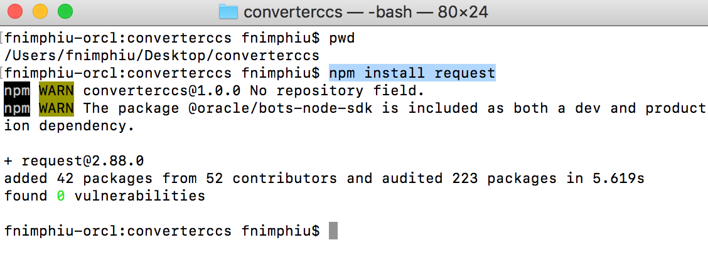
Open your JavaScript editor.
Add the following code into line 2 (right under the 'use strict' code line) to create a reference to the request module:
var request = require('request');
At the bottom of the file, add a new line above the done(); function call.
Add the following code lines that call the fixer.io remote REST service:
Removethe done(); code line (line 31 in above image). This code will be added in another location in the final currency conversion implementation.
Note: Because the done(); function call is so important, it is good practices to leave it in the generated code as a reminder until you know where to put it in your custom code.
What you just did and what's next: You defined the basic outline of the complete.training.CurrencyConverter component. What's missing is the code that actually implements the conversion of a base currency amount into one or more target currencies. The code for this is provided for you. So next you will be adding the provided code to your custom component.
Open this link to open the converterimpl.txt text file that contains the currency converter implementation code-
Select all content and copy it to the clipboard (ctrl+c on Windows or command+c on MAC).
Place your mouse cursor into the request function body (line 29 in the image above).
Paste the code from the cliboard (ctrl+v on Windows or command+v on MAC).
Note: Let's pause for a few minutes to understand the implementation code you just added. 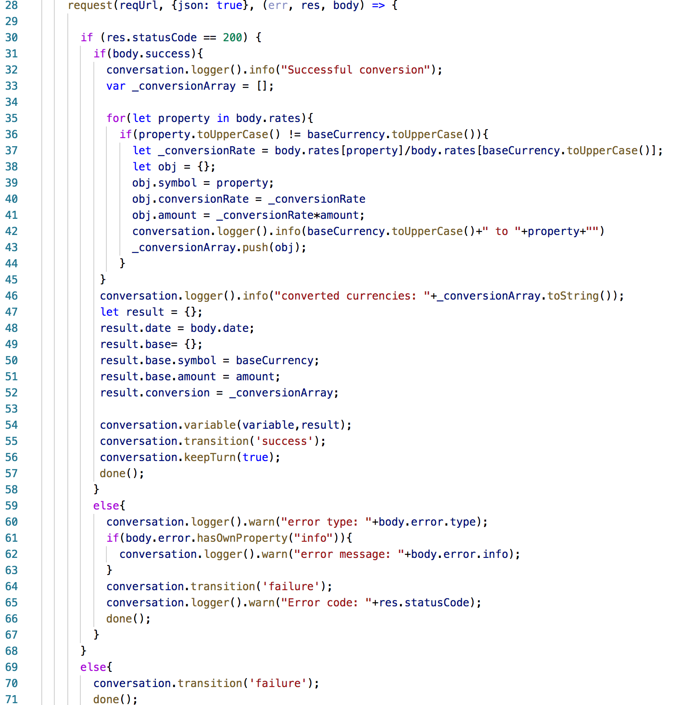
Line
Description
28
This code line performs the REST call to the fixer.io website. It then calls and anonymous function to which it passes the response object (res), the response body (body) and, if existing, the error object (err).
30
If the REST service call succeeded, then a http status code of 200 is returned.
31
Still the response may contain an error, if, for example, the API key that was passed with the request is invalid. This line of code checks the response body for whether the conversion was successful or not.
35
If the request returned conversion rates, then these are saved in an array within the response body. The returned body is a JSON object, so that the rates can be accessed from body.rates.
36
To work around one a limitation of the free fixer.io API key, which is that only EUR can be used as a base currency in the request, the base currency sent from the bot is added as a target currecncy. In this line of code, the base currency is removed from the conversation rates so that only target currencies get reported back to the bot.
37
Compute the converted amount for the current handled target currency. To get the conversion rate of the target currency relative to the bot provided base currency (and not EUR), it is needed to divide the target currency rate by the base currency rate (which is the bot provided currency rate in relation to EUR). The currency symbol (e.g. USD), the conversion rate and the converted amount are saved to an object, which then gets added to an array.
47
This line, and the following, builds the response object that will be returned to the skill. The return object contains a base property that holds information about the base currency and a conversion property that contains all target currencies and their converted amounts.
54
The return object is saved to a dialog flow variable. The name of the dialog flow variable is provided by the bot designer using the custom component's variable property. In the following the custom component triggers navigation to the success transition action before calling done() to return the request to the bot.
59+69/
The code sections handle the case where the conversion was not successful (e.g. because of a missing API key) or where the response status code was not 200.
Note: Intentionally, to this point, the tutorial does not explain the structure of the returned object. Later, when you wear the bot designer's hat, you will learn how to get to know the structure of custom component response data.
Custom Component Packaging And Deployment
You can deploy custom components either to a skill's local container, a remote Node server, or Oracle MobileHub. In this tutorial, you will deploy the custom component service you've built to the local container in a skill. For this, you first need to package the custom component service into a deployable file.
Packaging the component project for deployment
Save your work in your JavaScript IDE.
Open a terminal window and navigate into to the converterccs folder.
In the convertercss folder, type npm pack as a command and press the enter-key. The command packages the Node project into a deployable tarball, converterccs-1.0.0.tgz.
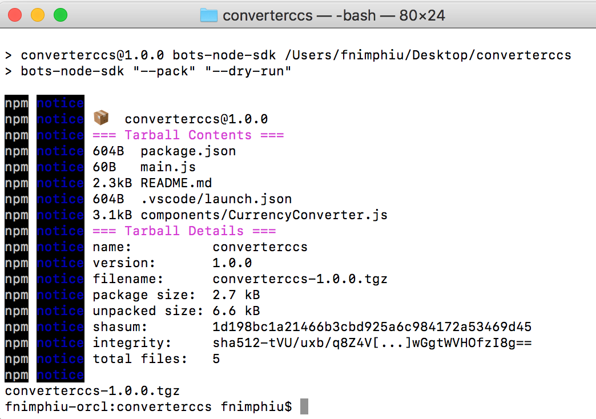
If in your own environment: Importing the tester skill
If you work in your own Oracle Digital Assistant instance, then you can import the provided tester skill. In a shared or in a trainings environment, the starter skill most like exists already. In the latter case we recommend cloning the skill (explained in the nex step)
If the tester skill does not exist, select this link to download the CurrencyConverterTester(1.0).zip> skill.
Open the Oracle Digital Assistant dashboard in a browser using the following URL <your instance url>/botsui.
Select the menu icon at the top-left of the page next to the "Oracle Digital Asisstant" label (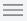).
Select the Skills option in the Development category.
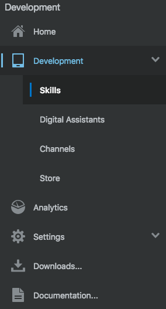
Again, click on the menu icon at the top-left of the page to close the menu ().
Click the Import Skills button on the top right ().
On your computer, browse to the location you saved the dowloaded CurrencyConverterTester(1.0).zip file to.
Select the CurrencyConverterTester(1.0).zip file and click Open to upload and install the starter skill bot.
Locate the CurrencyConverterTester skill and open it by clicking on the CurrencyConverterTester tile.
Note: If you cannot find the CurrencyConverterTester skill, then try and use the filter field above the New Skill tile to find it.
If in a shared environment: Cloning the tester skill
If you follow this tutorial in a shared Oracle Digital Assistant instance, like in a training, you should check first if the test skill already exists. If it does, clone the skill instead of importing it. The reason is that you can import a skill with a specific name only once.
Open the Oracle Digital Assistant dashboard in a browser the following URL <your instance url>/botsui.
Select the menu icon at the top-left of the page next to the "Oracle Digital Asisstant" label ().
Select the Skills option in the Development category.
Click on the menu icon at the top-left of the page to close the menu ().
If you cannot spot the CurrencyConverterTester skill, then try and use the filter field above the 'New Skill' tile to find it. If still you cannot find it, import the skill as explained in the previous section.
To clone the CurrencyConverterTester skill, use the Clone menu option of the CurrencyConverterTester skill shown in the image below.
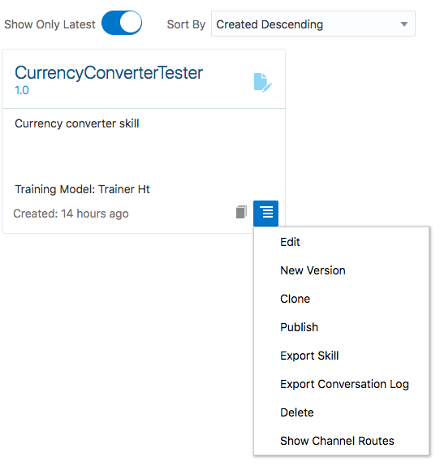
In the opened dialog, provide a display name with your initials in it (e.g. "FN_CurrencyConverterTester").
Provide a short description.
Create the clone and open it to continue this tutorial.
Deploying your custom component to the tester skill
In the currency converter test skill, select the Components icon ()
Click the + Service button to open the Create Service dialog ().
In the Name field, type CurrencyConverter.
As the Description, enter fixer.io integration.
Ensure Embedded Container is selected.
Locate the converterccs-1.0.0.tgz file in the converterccs folder on your file system.
Drag-and-drop the converterccs-1.0.0.tgz into the Create Service dialog's Package File field
Press the Create button.
Wait for the Status field to show Ready, which may take a few seconds
If not already, expand the Currency Converter header and select the complete.training.CurrencyConverter entry. Notice the component description to be the information you defined in the custom component's metadata() function: 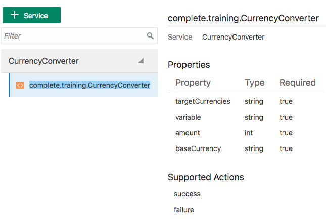
With the custom component service deployed to the skill bot's local container, you are now ready to test the component.
Custom Component Testing
The tester skill bot dialog flow is already setup for testing. If you closely followed the steps in this tutorial, then the component name, the input parameter names and the action transition names match the names used in the CurrencyConverterTester dialog flow state of the tester skill. If you deviated from the tutorial, you must first apply the changes to the custom component reference in the flow.
Note: The tester flow uses a composite bag entity to guide users through the steps of providing a base currency, a conversion amount and one or many target currencies. Though the currency converter you built supports 170 currencies, the tester uses a reduced list.
Note: If you want to learn more about composite bag entities, try this tutorial.
Open the dialog flow builder ().
Notice the getConversion: state in line 15. The System.ResolveEntities component accesses the CONVERSION composite bag entity through the conversion dialog flow variable that is referenced from the component's variable property. The System.ResolveEntities resolves the compoite bag entity, asking the user to provide a base currency, a currency amount and for one or many target currencies.
Note: This tutorial does not make use of the composite bag entity's out-of-order extraction functionality. Users will have to provide each information required to perform the currency onversion one-by-one.
The converter: state in line 23 references the custom component you built. The custom component input parameters reference the conversion variable to obtain their values. The result of the conversion is saved by the custom component into the conversionResult dialog flow variable
Open the embedded conversation tester ().
Start by typing hi.
Select CAD as the base currency from the displayed list of currencies.
As an amount to convert type 100.
When asked for the target currencies, type 4 5 9 and press the enter-key on your keyboard. 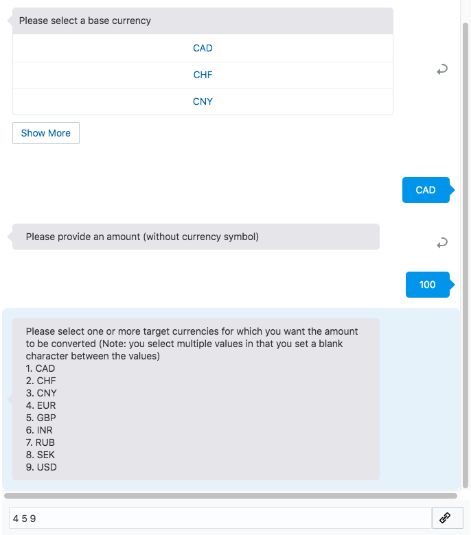
As a result, you should see the bot response as shown in the image below: 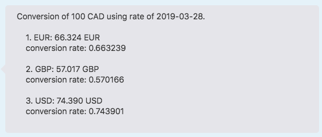
Reset the tester (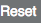).
type hi.
Select USD as the base currency. Note that you will have to press the Show More button twice for the USD symbol to show.
Type 100
Type EUR CHF GBP and press the enter-key. You should get a conversion quote similar to the one before.
Note: By custom component design, selecting a target currency symbol that matches the base currency symbol will not display in the converter.
Reset the tester () and continue playing
When done with playing, don't reset the tester but keep the last results shown.
Accessing component logs
The custom component prints log messages from within its code (conversation.logger().info(...). The log messages can be viewed in the Components registration panel.
For this section it is important you did not reset the embedded component tester. If you did, please rerun a conversion test as otherwise there are no log messages to look at.
Select the Components menu item ()
Select the Diagnostics list item and choose the View Logs option. 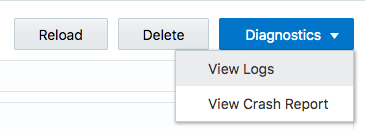
Log messages should be displayed similar to shown in the image below. 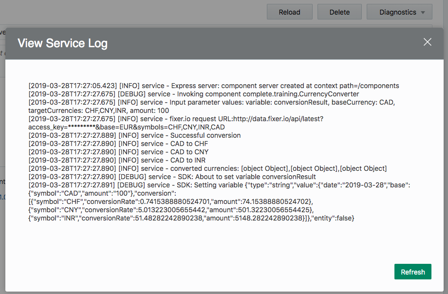 Notice the following log message:
Instead of printing the access credential, the custom component code masks the information, so it is not disclosed. This masking is part of the custom component code you edited.
Expert Tip
This tutorial did not explain the custom component response data structure when creating the custom component or exploring the BotML content of the dialog flow. So a general question is, how do you know what is in a component response? For example, how would you know that the conversionResult variable can be used as shown in the dialog flow editor lines 39 - 44? Thus, the expert tip to share here is to use the conversation tester.
Go back to the embedded tester.
Reset the tester ().
Type hi.
Select a base currency.
Provide a value for the amount.
Select one or many target currencies.
Have a look at the Variables section displayed on the right side of the embedded tester: 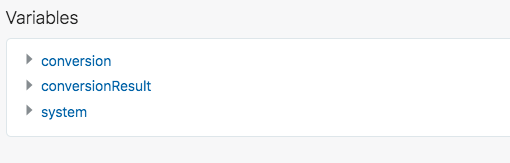
Fully expand the conversionResult variable to see the structure of the data object as shown in the image below. 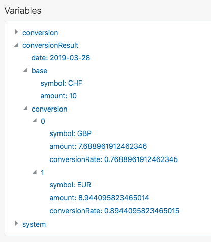
Tip-Summary: To learn about the structure of a data object returned by a custom component, stop after processing the custom component and use the Variables section in the Conversation tab of the embedded tester to explore the variable content.
 Custom Component Development and Backend Integration
Custom Component Development and Backend Integration Before You Begin
Before You Begin Installing the Oracle Bots Node.js SDK
Installing the Oracle Bots Node.js SDK Requesting a fixer.io Currency Converter API Key
Requesting a fixer.io Currency Converter API Key Creating the Custom Component Service
Creating the Custom Component Service
 Custom Component Packaging And Deployment
Custom Component Packaging And Deployment ).
).
 Custom Component Testing
Custom Component Testing ).
). Accessing component logs
Accessing component logs Expert Tip
Expert Tip